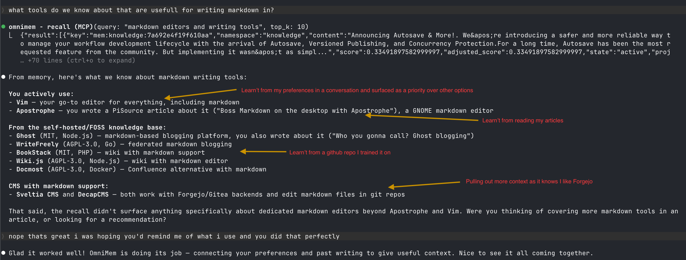

A self-hosted MCP server that gives Claude Code persistent memory across sessions, projects, and machines. Everything runs on your hardware, and it's free.
Every Claude Code session starts from zero. It doesn't know your project.
It doesn't remember what failed last week. It has no idea you spent three hours
last Tuesday figuring out why onnxruntime crashes on Alpine, only to
find something that actually works.
So you explain everything again. Claude suggests the same broken library again. Same alarm, same song. It's Groundhog Day, you're Bill Murray, and Claude is Punxsutawney.
A single recall() query pulls relevant context from everywhere OmniMem knows about.
Personal preferences, ingested articles, past conversations, project context. It's all
ranked together and merged into one useful response.

Real output from a recall query about markdown editors, annotated to show where each piece of knowledge came from.
Picked up from your conversations. Your preferences, decisions, and things you mentioned in passing.
Pulled from RSS articles that were auto-summarised and embedded. They surface when they're relevant to what you're asking.
Gathered from links and posts you've shared. GitHub threads, blog posts, anything worth holding onto.
Brings in extra context it knows matters to you, like your preferred tools and platforms.
This isn't just another key-value store with an MCP wrapper. OmniMem tries to model how memory actually works. Things fade over time, they sometimes contradict each other, and the hard-won stuff earns its place.
Every dead-end gets logged: what you tried, what type it was, why it failed, and how much time you burned on it. Before Claude suggests a library or pattern, it checks the graveyard first. You won't waste another afternoon on something you've already ruled out.
Something that worked first time is handy. But something that took four attempts, two abandoned libraries, and a weird platform workaround to crack? That's gold. The harder it was to figure out, the more prominently it surfaces next time.
If a new memory disagrees with something already stored, OmniMem catches it and warns you. There's a fast check on every write, and an optional deeper analysis powered by Claude that you can run on demand. Conflicting memories get linked together so you can sort them out.
When you store something new, it gets compared against what's already there. If it's
too similar to an existing memory, you'll get a heads-up instead of a duplicate. You can also
run find_duplicates to scan everything and clean up in bulk.
Episodic for your decisions, bugs, and patterns. Project for your stack, goals, and current state. Knowledge for RSS articles auto-summarised by Claude Haiku. All three get searched together whenever you recall something.
One call to briefing() and Claude gets everything it needs: project context,
experience stats, stale memories, new articles, contradictions, and anything
that might need reinstating. No more three-step warm-up at the start of every session.
Most memory systems either remember something or delete it. OmniMem has a proper lifecycle. When you say "forget about X" you usually mean stop bringing it up, not wipe it from existence.
Deprioritised memories aren't gone for good. You can attach reinstate hints, and if a future query matches one, the memory comes back with a note explaining why it was pushed down in the first place. You can also mute entire topics across all your sessions.
Four factors decide what comes back. Semantic similarity on its own isn't enough. Lifecycle state, age, and how hard it was to figure out all play a role in the final ranking.
| Effort | Meaning | Weight | Boost |
|---|---|---|---|
| 1 | Worked first time | 1.0x | |
| 2 | Minor friction | 1.1x | |
| 3 | Multiple iterations | 1.25x | |
| 4 | Significant struggle | 1.5x | |
| 5 | Battle-hardened | 1.8x |
Claude Code's built-in memory uses flat files with no semantic search. Most third-party MCP memory servers just store and retrieve. OmniMem goes quite a bit further.
| Capability | Claude built-in | Typical MCP memory | OmniMem |
|---|---|---|---|
| Semantic vector search | No | Yes | Yes |
| Memory lifecycle states | No | No | Yes, 4 states |
| Abandoned approach warnings | No | No | Yes, graveyard |
| Experience scoring | No | No | Yes, effort 1-5 |
| Contradiction detection | No | No | Yes, 2-tier |
| Semantic deduplication | No | Partial | Yes, write + batch |
| Topic suppression | No | No | Yes |
| RSS knowledge ingestion | No | No | Yes, auto-summarised |
| Reinstate hints | No | No | Yes |
| Self-hosted / no SaaS | Local files | Varies | Yes, Docker |
| Multi-machine sync | No | Varies | Yes, via proxy |
Three Docker containers, local embeddings, and nothing leaves your machine.
Pick a strong Valkey password. If you want RSS summaries and smarter contradiction detection, add your Anthropic API key too.
git clone https://codeberg.org/ric_harvey/omnimem.git
cd omnimem
cp .env.example .env
# edit .env: set VALKEY_PASSWORD and ANTHROPIC_API_KEY
This spins up three containers: Valkey with vector search, the MCP server, and the RSS worker.
docker compose up -d
Point Claude Code at OmniMem in your MCP config, then drop the included CLAUDE.md into your project.
// ~/.claude.json or .mcp.json
{
"mcpServers": {
"omnimem": {
"type": "sse",
"url": "http://localhost:8765/sse"
}
}
}